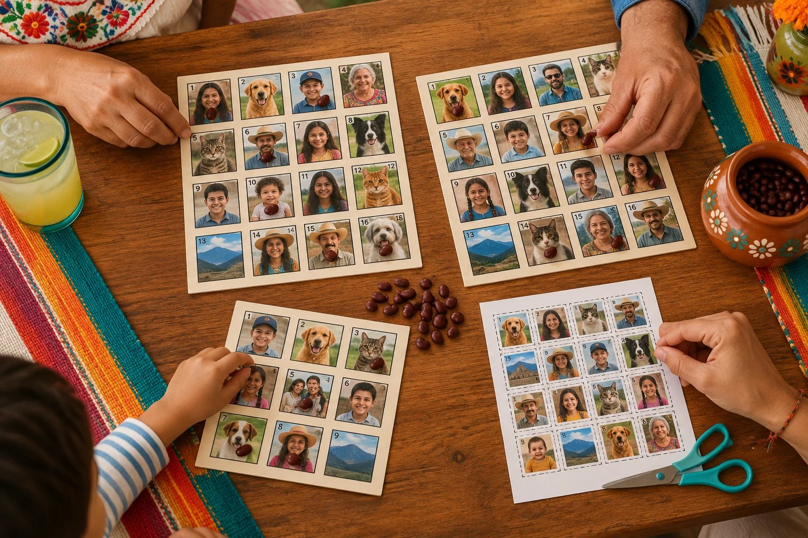

Es fácil: un cantor, tableros, la baraja y unos frijoles. Aquí te explicamos todo en cinco minutos.

Uno por jugador (o varios, si quieres más suerte).
Las cartas recortadas, revueltas y boca abajo.
O piedritas, monedas o fichas para marcar.
Saca las cartas y las anuncia en voz alta.
Cada jugador escoge uno o más tableros. Si hay apuesta, cada quien pone su parte por tablero y se junta el pozo.
La anuncia por su nombre, o con un verso o adivinanza para hacerlo más divertido.
Si la carta está en tu tablero, ponle un frijol encima. Pon atención: el cantor no espera.
Al completar la jugada acordada, grita su nombre. Se revisan tus cartas y, si todo está bien, te llevas el premio.
El cantor es el alma del juego. En lugar de decir solo el nombre de la carta, la tradición es anunciarla con un verso, un refrán o una adivinanza, para que los jugadores tengan que estar atentos.
Muchos cantores arrancan cada partida con un «¡Se va y se corre!». Con tus propias cartas puedes inventar versos sobre cada persona: es la parte que más risas saca.
«El que le cantó a San Pedro no le volverá a cantar.»
«Puliendo el paso, por toda la calle real.»
«Con los cantos de sirena, no te vayas a marear.»
«Pórtate bien, cuatito, si no te lleva el coloradito.»
Antes de empezar, pónganse de acuerdo en qué jugadas valen. La primera persona en completar una jugada se la lleva; después, esa jugada queda cerrada.
Una línea completa: horizontal, vertical o diagonal.
Las 4 cartas del centro del tablero.
Las cartas de las cuatro esquinas.
Todas las cartas. Es el premio mayor y cierra la ronda.
Algunas familias agregan otras jugadas, como El Marco (las 12 cartas de la orilla) o La X (las dos diagonales). Lo importante es acordarlo antes de empezar.
En muchas casas, en lugar de «¡Lotería!», se grita ¡Buenas! al ganar. Y cuando alguien completa una línea, ¡es un chorro! De ahí viene nuestro nombre.
Cada quien pone una cantidad por tablero. Lo que se junta (el pozo) se reparte entre las jugadas: por ejemplo, una parte para el Chorro, otra para el Centro y la más grande para el Tablero Lleno.
Con tableros de 3×3 (9 imágenes) las partidas son más cortas y más fáciles de seguir. Para los más pequeños, lo mejor es jugar a chorro o a tablero lleno, y usar cartas que reconozcan: la familia, sus mascotas o sus juguetes favoritos. En chorroybuenas necesitas al menos 15 cartas para hacer tableros de Modo Kids.
Al menos uno por jugador, y unos cuantos de más para quien quiera jugar con dos. Entre más cartas tenga la baraja, más distintos son los tableros entre sí y menos empates hay. Para el Modo Clásico se recomiendan al menos 24 cartas.
La baraja tradicional tiene 54 cartas, cada una con su número, su imagen y su nombre. Una lotería personalizada puede tener las que tú quieras; en chorroybuenas el mínimo es 24 (15 en Modo Kids).
En el juego tradicional, 16, acomodadas en 4 filas de 4. En Modo Kids, 9 (3×3).
Es completar una línea de cartas: horizontal, vertical o diagonal. Suele ser la primera jugada que se gana en cada ronda.
«¡Lotería!» o «¡Buenas!», según la costumbre de cada casa. Para las jugadas más pequeñas se grita su nombre: «¡Chorro!», «¡Centro!», «¡Esquinas!».
Lo más común es repartir el premio entre las dos. Conviene acordarlo antes de empezar.
Tradicionalmente con frijoles, pero sirven piedritas, monedas, fichas o corcholatas.
Haz los tableros y la baraja con tus fotos, gratis, e imprímelos hoy.